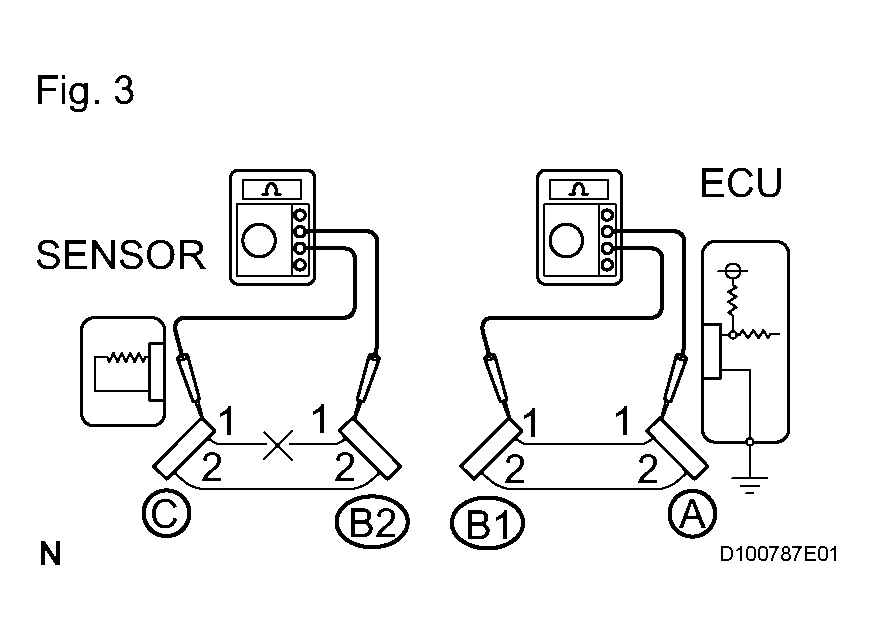
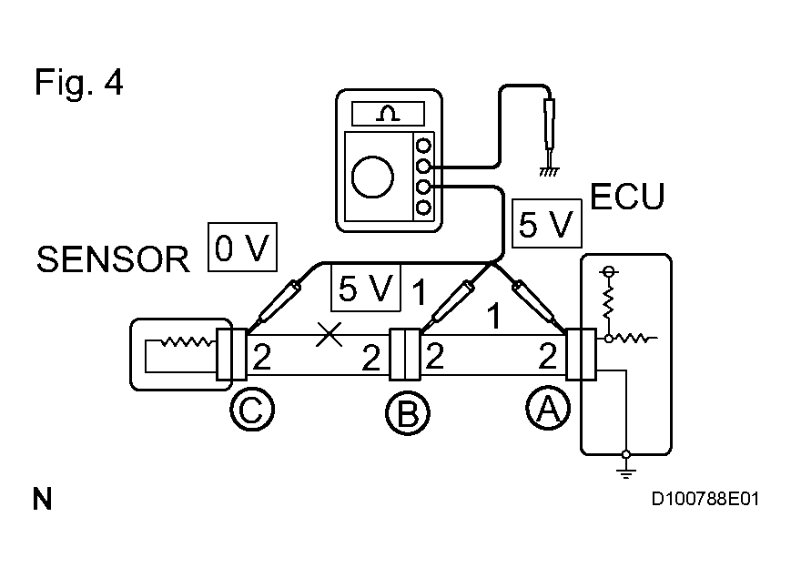

Electronic Circuit Inspection Procedure
- BASIC INSPECTION
- WHEN MEASURING RESISTANCE OF ELECTRONIC PARTS
- Unless otherwise stated, all resistance measurements should be made at an ambient temperature of 20°C (68°F). Resistance measurements may be inaccurate if measured at high temperatures, i.e. immediately after the vehicle has been running. Measurements should be made after the engine has cooled down.
- HANDLING CONNECTORS
- When disconnecting a connector, first squeeze the mating halves tightly together to release the lock, and then press the lock claw and separate the connector.
- When disconnecting a connector, do not pull on the harnesses. Grasp the connector directly and separate it.
- Before connecting a connector, check that there are no deformed, damaged, loose or missing terminals.
- When connecting a connector, press firmly until it locks with a "click" sound.
- If checking a connector with a TOYOTA electrical tester, check the connector from the backside (harness side) using a mini test lead.NOTE:
- As a waterproof connector cannot be checked from the backside, check it by connecting a sub-harness.
- Do not damage the terminals by moving the inserted tester needle.
- CHECKING CONNECTORS
- Checking when a connector is connected: Squeeze the connector together to confirm that they are fully connected and locked.
- Checking when a connector is disconnected: Check by pulling the wire harness lightly from the backside of the connector. Look for unlatched terminals, missing terminals, loose crimps or broken conductor wires. Check visually for corrosion, metallic or foreign matter and water, and bent, rusted, overheated, contaminated, or deformed terminals.
- Checking the contact pressure of the terminal: Prepare a spare male terminal. Insert it into a female terminal, and check for ample tension when inserting and after full engagement.NOTE: When testing a gold-plated female terminal, always use a gold-plated male terminal.
- REPAIR METHOD OF CONNECTOR TERMINAL
- If there is any foreign matter on the terminal, clean the contact point using an air gun or cloth. Never rub the contact point using sandpaper as the plating may come off.
- If there is abnormal contact pressure, replace the female terminal. If the male terminal is gold plated (gold color), use a gold-plated female terminal; if it is silver-plated (silver color), use a silver-plated female terminal.
- Damaged, deformed, or corroded terminals should be replaced. If the terminal does not lock into the housing, the housing may have to be replaced.
- HANDLING OF WIRE HARNESS
- If removing a wire harness, check the wiring and clamping before proceeding so that it can be restored in the same way.
- Never twist, pull or slacken the wire harness more than necessary.
- The wire harness should never come into contact with a high temperature part, or rotating, moving, vibrating or sharp-edged parts. Avoid contact with panel edges, screw tips and other sharp items.
- When installing parts, never pinch the wire harness.
- Never cut or break the cover of the wire harness. If it is cut or broken, replace it or repair it with vinyl tape.
- WHEN MEASURING RESISTANCE OF ELECTRONIC PARTS
- CHECK FOR OPEN CIRCUIT
- For an open circuit in the wire harness in Fig 6, check the resistance or voltage, as described below.
- Check the resistance.
- Disconnect connectors A and C, and measure the resistance between them.
Standard resistance ( Fig 7 )
TESTER CONNECTION AND SPECIFIED CONDITIONTester Connection Specified Condition Connector A terminal 1- Connector C terminal 1 10 kΩ or higher Connector A terminal 2 - Connector C terminal 2 Below 1 Ω HINT:
Measure the resistance while lightly shaking the wire harness vertically and horizontally. If the results match the examples above, an open circuit exists between terminal 1 of connector A and terminal 1 of connector C.
- Disconnect connector B and measure the resistance between the connectors.
Standard resistance ( Fig 8 )

Courtesy of © TOYOTA, LICENSE AGREEMENT TMS1002TESTER CONNECTION AND SPECIFIED CONDITIONTester Connection Specified Condition Connector A terminal 1 - Connector B1 terminal 1 Below 1 Ω Connector B2 terminal 1 - Connector C terminal 1 10 kΩ or higher If the results match the examples above, an open circuit exists between terminal 1 of connector B2 and terminal 1 of connector C.
- Disconnect connectors A and C, and measure the resistance between them.
- Check the voltage.
- In a circuit in which voltage is applied to the ECU connector terminal, an open circuit can be checked by conducting a voltage check. With each connector still connected, measure the voltage between the body ground and these terminals (in this order): 1) terminal 1 of connector A, 2) terminal 1 of connector B, and 3) terminal 1 of connector C.
Standard voltage ( Fig 9 )

Courtesy of © TOYOTA, LICENSE AGREEMENT TMS1002TESTER CONNECTION AND SPECIFIED CONDITIONTester Connection Specified Condition Connector A terminal 1 - Body ground 5 V Connector B terminal 1 - Body ground 5 V Connector C terminal 1 - Body ground Below 1 V If the results match the examples above, an open circuit exists in the wire harness between terminal 1 of connector B and terminal 1 of connector C.
- In a circuit in which voltage is applied to the ECU connector terminal, an open circuit can be checked by conducting a voltage check. With each connector still connected, measure the voltage between the body ground and these terminals (in this order): 1) terminal 1 of connector A, 2) terminal 1 of connector B, and 3) terminal 1 of connector C.
- CHECK FOR SHORT CIRCUIT
- If the wire harness is ground shorted (Fig 10), locate the article by conducting a resistance check with the body ground (below).
- Check the resistance with the body ground.
- Disconnect connectors A and C, and measure the resistance.
Standard resistance ( Fig 11 )
TESTER CONNECTION AND SPECIFIED CONDITIONTester Connection Specified Condition Connector A terminal 1 - Body ground Below 1 Ω Connector A terminal 2 - Body ground 10 kΩ or higher HINT:
Measure the resistance while lightly shaking the wire harness vertically and horizontally.
If the results match the examples above, a short circuit exists between terminal 1 of connector A and terminal 1 of connector C.
- Disconnect connector B and measure the resistance.
Standard resistance ( Fig 12 )
TESTER CONNECTION AND SPECIFIED CONDITIONTester Connection Specified Condition Connector A terminal 1 - Body ground 10 kΩ or higher Connector B2 terminal 1 - Body ground Below 1 Ω If the results match the examples above, a short circuit exists between terminal 1 of connector B2 and terminal 1 of connector C.
- Disconnect connectors A and C, and measure the resistance.
- CHECK AND REPLACE ECU NOTE:
- The connector should not be disconnected from the ECU. Perform the inspection from the backside of the connector on the wire harness side.
- When no measuring condition is specified, perform the inspection with the engine stopped and the ignition switch ON.
- Check that the connectors are fully seated. Check for loose, corroded or broken wires.
- First, check the ECU ground circuit. If it is faulty, repair it. If it is normal, the ECU could be faulty. Temporarily replace the ECU with a normally functioning one and check if the symptoms occur. If the trouble symptoms disappear, replace the original ECU.
- Measure the resistance between the ECU ground terminal and body ground.
Standard resistance:
Below 1 Ω
- Disconnect the ECU connector. Check the ground terminal on the ECU side and wire harness side for bending, corrosion or foreign matter. Lastly, check the contact pressure of the female terminals.
- Measure the resistance between the ECU ground terminal and body ground.